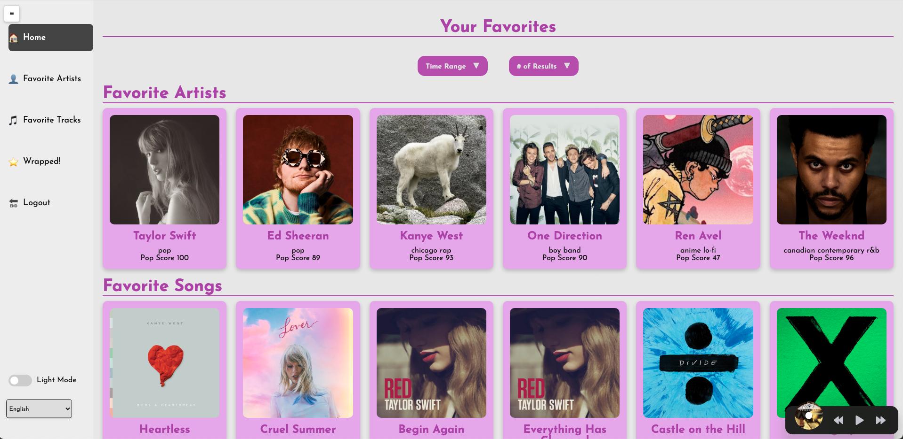

Spotify Wrapped
Helluva Developers (Group 28)

Scroll down

Helluva Developers (Group 28)
Scroll down
Organized tasks for group via Trello, helped with frontend templates, worked with Jackson on music player, and made the revised portfolio to include Project 1 and 2.
In collaboration with others implemented the music player, javascript for light and dark mode, javascript for static page translation, and set up web hosting using render.com. Also worked on front end on multiple pages as well as backend database interaction and saving.
TBD

With others, implemented the backend to grab the data needed for the wrapped section and the base site, created the music functionality using JavaScript and Spotify Web Player API, worked on the backend to store the wraps generated in the database, and developed the front end for the base site.
TBD
Our app features all the user stories and needs. We designed a site that takes in a user's preferred food, location in Atlanta, and various filters and outputs the highest rated restaurants in the Atlanta area. The design was inspired by Yelp's site, includes authentication, and allows favorites which is displayed in the user profile.
Specifically, the web app my team designed features a home page that serves as the central hub for users, allowing access to all the other features of the project in a centralized location. The main functionality of the project lies in the restaurant search bar, which allows users to search for restaurants by name or category, helping them find specific dining options or explore different types of cuisine. This feature directly aligns with the user story: "As a customer, I want to search for restaurants by name, so that I can quickly find a specific restaurant I’m looking for." The profile page lists out the user's personal information including a changeable username and the list of favorited restaurants. Finally, the project uses the built in Django authentication system for sign up and sign in.
The Scrum process for this project involved a collaborative effort between team members, each contributing to different aspects of the development. After our initial sprint plannings, we stuck as close as possible to our plan. As the Scrum Master, Jason Chen organized tasks using Trello, ensuring smooth coordination of the project and tracked work to ensure steady progress. He also worked closely with Kishan on developing frontend templates and Jackson with the video player. Jackson, the Full-Stack Lead, played a crucial role in implementing the music player, light & dark mode, and static page translation, while also helped set up hosting for the final product. For keeping track of all the implementations, we used Trello to track the tasks.
Aidan (TO BE FIXED), as the Backend Lead, focused on integrating the Google APIs to pull restaurant data, displaying markers on the map, and working with Jackson to filter and display restaurant lists based on user inputs. Vincent contributed heavily to the user authentication process and helped build the favorites feature, ensuring users could manage their favorite restaurants. Meanwhile, Kishan, the Product Owner and Frontend Developer, designed the pages and layout using Figma while contributing to frontend development.
Each team member worked in tandem to ensure the user needs were met, with everyone contributing to the Scrum process and keeping the team aligned on priorities. The daily updates were also useful to keep track of progress. We were more efficient for this project than the last one because we were more familiar with Django and the scrum process. We enjoyed working on this more challenging project and seeing our Spotify wrapped early!